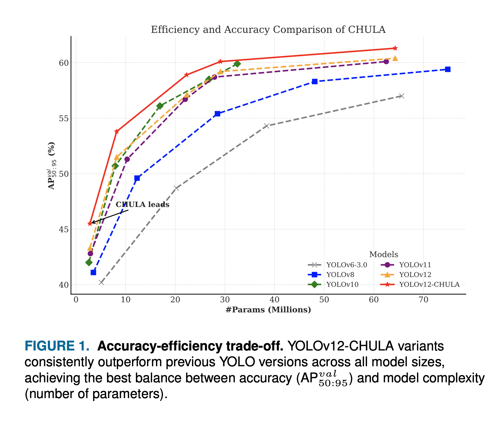
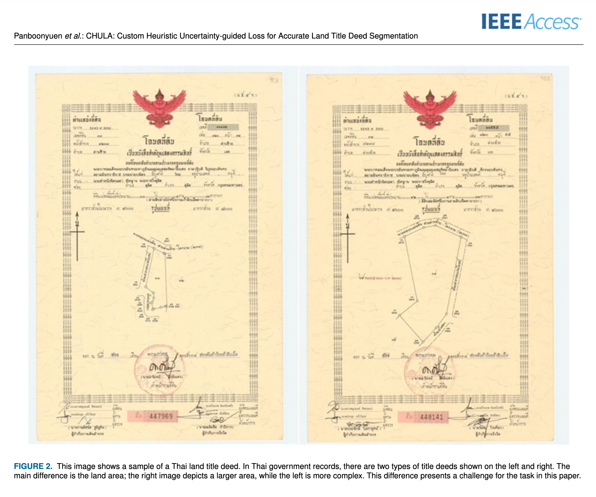
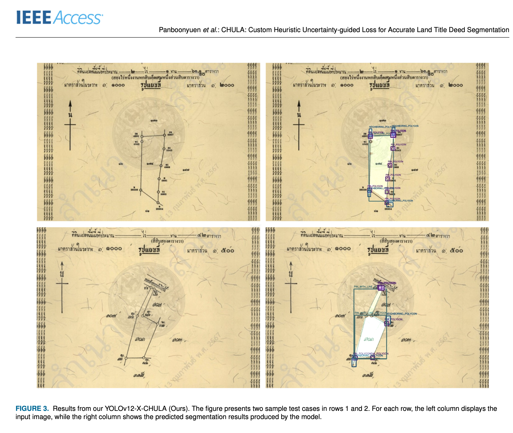
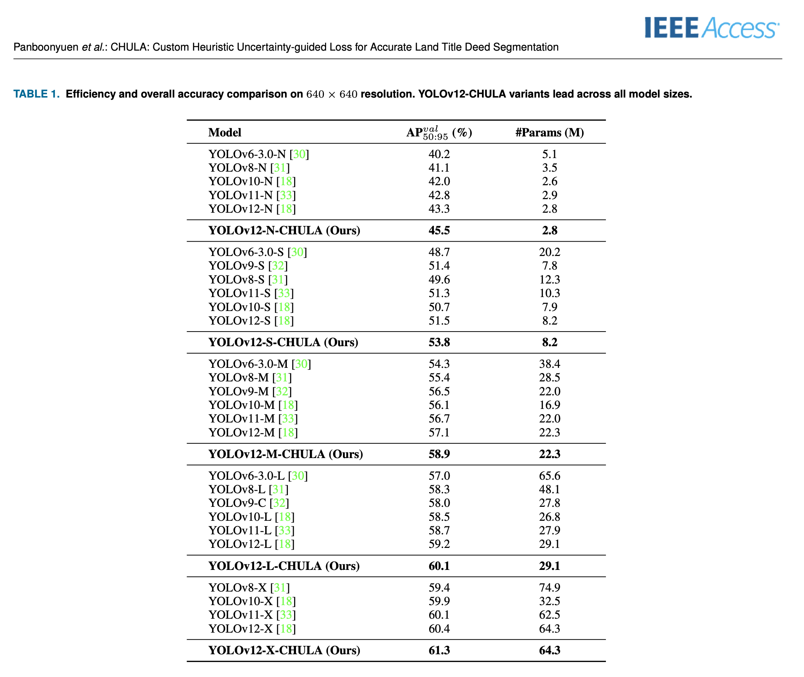
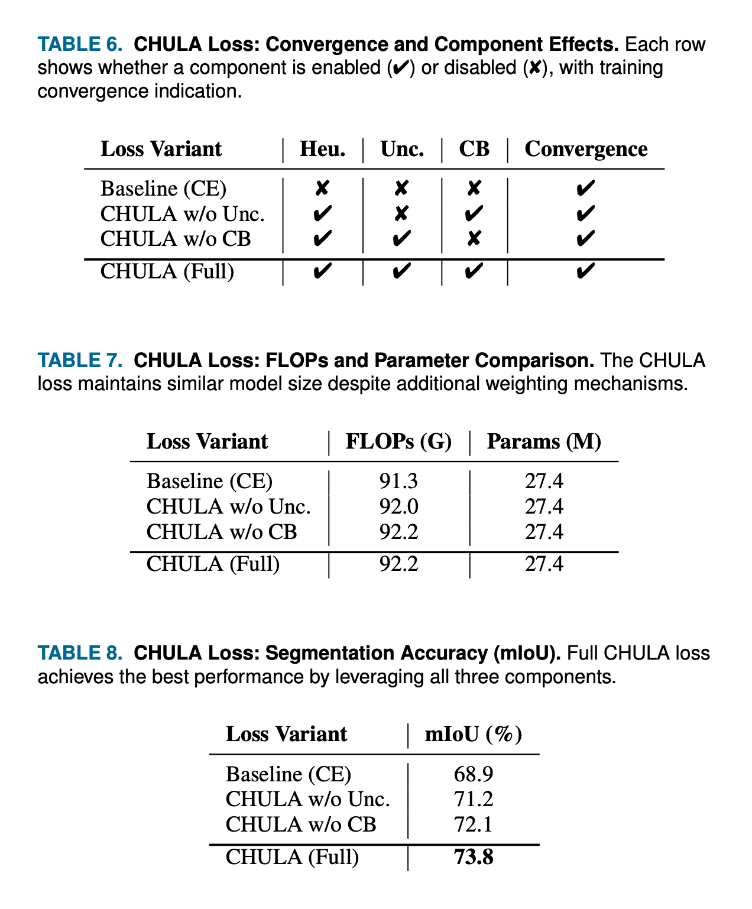

A unified loss for structured document understanding
CHULA is a novel Custom Heuristic Uncertainty-guided Loss engineered for highly accurate segmentation and object detection within Thai land title deed documents. By uniquely combining class-balanced cross-entropy, aleatoric uncertainty modeling, and domain-specific heuristic priors, CHULA addresses the core challenges of noisy, ambiguous, and structure-rich document image parsing.
The loss function is model-agnostic and integrates seamlessly with any modern segmentation or detection backbone — including YOLOv8, v11, v12, and DeepLabv3+ — providing significant performance gains, especially for low-resource and underrepresented semantic categories such as PIN markers and official seals (STAMP).
61.3%
mAP AP₅₀₋₉₅
3
Loss Components
YOLOv12
Latest Backbone
C2F
Fellowship Support
Contributions
What CHULA brings to the table
Four core innovations designed to push document segmentation accuracy beyond conventional baselines.
⚡
Unified Loss Function
A single differentiable objective combining uncertainty, class balance, and document heuristics — no auxiliary training tricks needed.
🎯
Low-resource Class Support
Specifically engineered to recover precision for rare semantic classes like PIN markers and official seals, where standard losses catastrophically fail.
🔌
Plug-and-play Integration
Drop-in replacement for standard loss in YOLO, DeepLabv3+, and beyond. Two lines of Python to integrate into any existing pipeline.
🧩
Multi-task Learning
Native support for joint segmentation and detection objectives within a single training run, enabling richer representation learning.
Methodology
The CHULA loss formulation
A principled combination of three complementary terms, each targeting a distinct challenge in document image segmentation.
ℒCHULA = λce · ℒCE + λunc · ℒUNC + λheu · ℒHEU
ℒCE — Class-balanced cross-entropy (λ=1.0)
ℒUNC — Aleatoric uncertainty penalty (λ=0.3)
ℒHEU — Domain heuristic prior (λ=0.5)
Experimental Results
Visualizations & benchmarks
Comprehensive evaluation across accuracy, efficiency, and convergence properties on real-world Thai land title deed data.

Fig. 1Accuracy–efficiency trade-off. CHULA achieves a superior Pareto frontier, outperforming all baseline configurations on both mAP and inference cost axes.
Fig. 2Inference latency comparison across YOLO family variants. CHULA adds negligible overhead while consistently boosting detection accuracy.

Fig. 3Representative samples from the Thai land title deed benchmark dataset.

Fig. 4Sample segmentation outputs from CHULA on unseen test documents.

Fig. 5Overall CHULA efficiency and accuracy comparison, demonstrating consistent improvements across all evaluation splits.

Fig. 6Convergence curves, per-component ablation effects, and FLOP efficiency analysis validating each term of the CHULA loss.
Implementation
Integrate CHULA in two lines of Python
Designed for frictionless adoption — drop into any YOLO or segmentation training loop with minimal configuration.
chula_integration.py
from chula.loss importCHULALossfrom chula.utils import compute_class_weights
# Auto-detect binary vs multi-class & compute per-class weightsclass_weights = compute_class_weights(
"datasets/medical-pills",
num_classes=1
).cuda()
# Instantiate CHULA with tunable component weightsloss_fn = CHULALoss(
class_weights=class_weights,
lambda_ce=1.0,
lambda_unc=0.3,
lambda_heu=0.5
)
# Drop-in replacement for your standard criterionloss = loss_fn(pred_logits, targets, uncertainty_map)
quickstart.sh
# Clone & install
git clone https://github.com/kaopanboonyuen/CHULA.git
cd CHULA
pip install -r requirements.txt
# Launch training
python train.py --config config.yaml
Experience CHULA with real-world datasets. Due to access restrictions on Thai land title deed data, public domain datasets demonstrate CHULA's domain-agnostic capabilities.
If CHULA contributes to your research, please consider citing our paper.
@article{panboonyuen2025chula,
title = {CHULA: Custom Heuristic Uncertainty-guided Loss
for Accurate Land Title Deed Segmentation},
author = {Panboonyuen, Teerapong},
year = {2025}
}